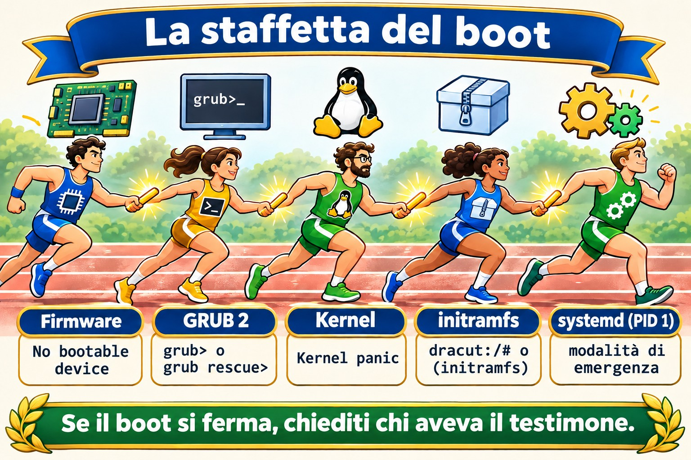
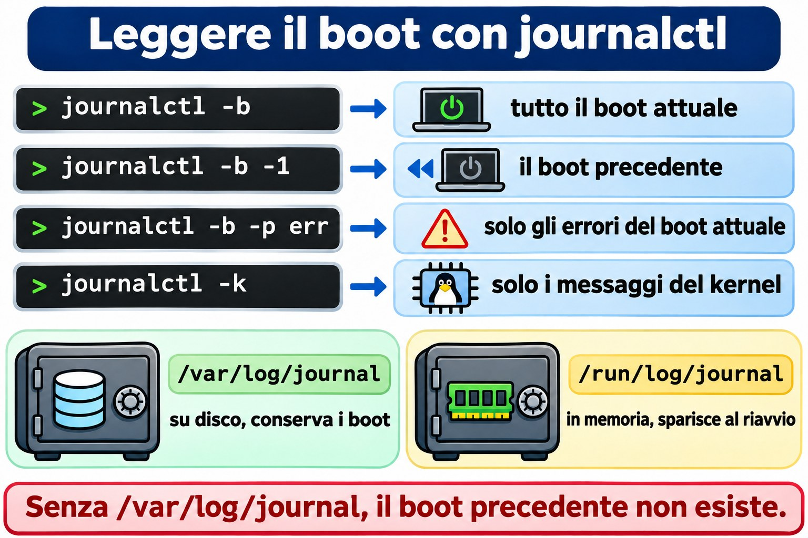
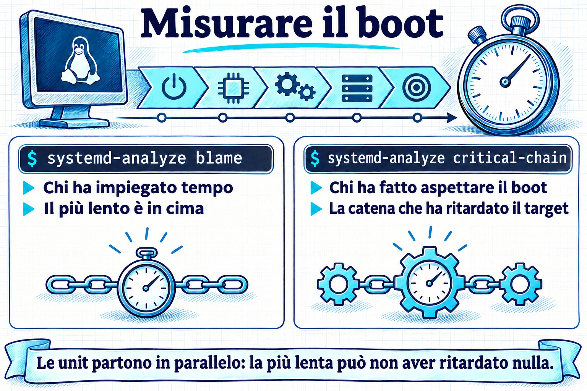

Lezione 4.1 · Come si avvia Linux
Finora hai acceso le VM e ci sei entrato. Oggi guardi cosa succede nel mezzo: tra la pressione del pulsante e la comparsa del login:, cinque programmi si passano il controllo uno con l'altro. Quando un server non torna dopo un reboot, la prima domanda è sempre in quale di queste cinque fasi si è fermato, e ogni fase ha una faccia diversa sullo schermo. Chi sa leggere quella faccia ripara il server; chi non sa, lo reinstalla.
Formato nucleo. Da questa lezione in poi, ogni lezione porta l'essenziale: quello che devi sapere senza internet, in un'emergenza, e quello che fai a mano. I dettagli che non sono entrati sono elencati nella sezione 12, da tirare fuori con DeepTutor quando ti servono.
| Scheda | Lezione 4.1 |
|---|---|
| Modulo | M4 · Boot e systemd, lezione 1 di 4 |
| Quando | Settimana 8 |
| Alla fine sei in grado di | Dire le cinque fasi del boot e cosa ognuna consegna alla successiva; scoprire se la macchina usa UEFI o BIOS; trovare il kernel e l'initramfs in /boot e la riga di comando del kernel in /proc/cmdline; confermare che il PID 1 è systemd e qual è il target predefinito; leggere il boot attuale e quello precedente con journalctl -b; trovare cosa ha rallentato il boot con systemd-analyze |
| Prerequisiti | Lezione 2.3 (processi e journalctl); Lezione 3.5 (vim e sudoedit) |
| Durata | Circa 1h30 |
| Snapshot | m4a1-inicio e m4a1-fim su entrambe le VM |
1 · Riscaldamento
Tre domande, a mente. Scrivi le risposte; le soluzioni le controllano alla fine.
- La macchina si accende: compare il logo del produttore, poi un menu con un elenco di kernel, poi testo che scorre, poi il
login:. Indovina: chi mostra il menu, e chi mostra il testo che scorre? - SSH accetta già la tua connessione, ma
systemd-analyzerisponde che il boot non è ancora finito. Indovina: come può essere? - Indovina: qual è il numero del processo di
systemd, e perché proprio quello?
2 · Perché conta
| La richiesta | La risposta sbagliata | Cosa provoca |
|---|---|---|
| "Il server non è tornato dopo il reboot" | Ripristinare il backup | Senza sapere in quale fase si è fermato, non sai cosa riparare, e puoi ripristinare un backup con lo stesso problema. Lo schermo dice la fase: grub>, Kernel panic, dracut:/# o Give root password for maintenance sono quattro problemi diversi |
| "Ci mette tanto a partire dopo l'aggiornamento" | Aspettare e lamentarsi | systemd-analyze blame mostra in due secondi quale servizio ha trattenuto il boot |
| "Si è riavviato da solo di notte" | Guardare journalctl, che mostra solo il boot attuale | Il motivo è nel boot precedente, con journalctl -b -1. Se il journal non è persistente, il motivo è sparito con il reboot, e non lo saprai mai |
| "Ho aggiornato il kernel e non parte più" | Reinstallare | GRUB conserva i kernel precedenti. Scegliere quello precedente nel menu rimette il server in linea oggi; la causa la indaghi con calma, nella Lezione 4.4 |
3 · Modello mentale
Il boot è una staffetta con cinque corridori. Ognuno fa una cosa sola e passa il testimone: il firmware trova il disco e carica GRUB; GRUB mette in memoria il kernel e l'initramfs e consegna la riga di comando; il kernel accende l'hardware ed esegue l'initramfs; l'initramfs trova e monta il disco vero e chiama
systemd; systemd avvia i servizi fino al target predefinito. Se il boot si è fermato, la domanda è sempre la stessa: chi aveva il testimone?
| Fase | Dove vive | Cosa consegna | Se si ferma qui, vedi |
|---|---|---|---|
| 1 · Firmware (UEFI o BIOS) | Sulla scheda madre, o nella configurazione della VM | GRUB caricato dal disco | Solo il logo, oppure No bootable device |
| 2 · GRUB 2 | /boot/efi (UEFI) e /boot | Kernel e initramfs in memoria, più la riga di comando | Il prompt grub> o grub rescue> |
| 3 · Kernel | /boot/vmlinuz-VERSÃO | Hardware acceso, initramfs in esecuzione | Kernel panic |
| 4 · initramfs | /boot/initramfs-VERSÃO.img (Rocky) o /boot/initrd.img-VERSÃO (Debian) | Il disco root montato, e systemd chiamato | Una shell dracut:/# (Rocky) o (initramfs) (Debian), dopo aver aspettato il disco |
| 5 · systemd, il PID 1 | /usr/lib/systemd/systemd | I servizi e il target predefinito | La modalità di emergenza: Give root password for maintenance |
Tieni a mente la tabella. È la mappa di ogni emergenza di boot per il resto del corso.


4 · L'essenziale
UEFI o BIOS
Il firmware è il primo programma a girare. Il BIOS, il vecchio, legge il primo settore del disco ed esegue quello che trova. L'UEFI, l'attuale, tiene un elenco di voci di boot nella memoria della scheda (la NVRAM) e apre un file .efi in una piccola partizione, in FAT, chiamata ESP, che Linux monta in /boot/efi. In una VM di Proxmox, dipende dalla VM: OVMF è UEFI, SeaBIOS è BIOS.
Per sapere qual è, senza riavviare: se esiste /sys/firmware/efi, il sistema è partito in UEFI.
GRUB 2
GRUB mostra il menu, carica il kernel e l'initramfs scelti e passa la riga di comando del kernel. Il suo file, grub.cfg, è generato: non lo modifichi a mano, perché il prossimo aggiornamento del kernel lo riscrive. Su Rocky, ogni kernel ha una voce in /boot/loader/entries/ e lo strumento è grubby; su Debian, modifichi /etc/default/grub ed esegui update-grub. Entrambe le cose restano per la Lezione 4.4.
Kernel e riga di comando
Il kernel è un file, /boot/vmlinuz-VERSÃO, e la versione in esecuzione è quella di uname -r. La riga di comando passata da GRUB è in /proc/cmdline. Le voci che vedrai sempre:
root=: dov'è il disco root, per UUID o per nome di volume LVM.ro: il kernel monta la root in sola lettura, esystemdla rimonta in scrittura dopo i controlli.quiete, su Rocky,rhgb: nascondono il testo del boot. Toglierli nel menu di GRUB è il primo passo per vedere dove si blocca il boot.
initramfs
Il kernel deve leggere il disco per trovare /, ma il driver del disco, LVM o la cifratura sono sul disco stesso. L'initramfs risolve il problema: è un mini-sistema che GRUB mette in memoria insieme al kernel, con solo ciò che serve per trovare e montare la root vera. Quando ci riesce, passa il controllo a /sbin/init della root, che è systemd. Rocky genera l'initramfs con dracut, e Debian con update-initramfs; entrambi partono da soli a ogni kernel nuovo.
Se l'initramfs non ha il driver giusto, o non trova il disco di root=, finisci nella sua shell dopo un'attesa, oppure in un Kernel panic che parla di unable to mount root fs.
systemd, il PID 1
systemd è il primo processo che il kernel avvia nella root vera, quindi riceve il numero 1. Tutti gli altri processi discendono da lui, e se muore, il kernel va in panic. Avvia le unit (servizi, mount, socket) in parallelo, rispettando le dipendenze, fino al target predefinito: un gruppo di unit con un nome, come multi-user.target per un server, o graphical.target con l'interfaccia grafica.
Prima di systemd, lo standard era SysVinit, con livelli numerati, i runlevel. La documentazione vecchia usa ancora la corrispondenza:
| Runlevel | Target | A cosa serve |
|---|---|---|
| 0 | poweroff.target | Spegnere |
| 1 | rescue.target | Manutenzione, un solo utente |
| 3 | multi-user.target | Server: rete e servizi, senza interfaccia grafica |
| 5 | graphical.target | Il 3 più l'interfaccia grafica |
| 6 | reboot.target | Riavviare |
Leggere il boot
journalctl -b: tutto del boot attuale.-b -1è il precedente,-b -2quello prima ancora, e--list-bootselenca quelli che il journal ha conservato.journalctl -b -p err: solo gli errori del boot attuale.journalctl -k, oppuresudo dmesg: solo i messaggi del kernel, dove compaiono disco, rete e hardware.- Il journal conserva i boot precedenti solo se è persistente, scritto in
/var/log/journal. Se quella cartella non esiste, resta in/run/log/journal, in memoria, e sparisce a ogni reboot.


Misurare il boot
systemd-analyze: quanto tempo ha richiesto ogni fase.systemd-analyze blame: quanto ha richiesto ogni unit, dalla più lenta alla più veloce. Attenzione: le unit girano in parallelo, quindi la più lenta non sempre ha rallentato il boot.systemd-analyze critical-chain: la catena di unit che ha davvero ritardato il target predefinito. Comincia da qui.systemctl is-system-running:running(tutto a posto),degraded(qualche unit è fallita: guarda consystemctl --failed) ostarting(il boot non è ancora finito).
Rocky × Debian
| Rocky | Debian | |
|---|---|---|
| Configurazione di GRUB | /boot/grub2/grub.cfg e /boot/loader/entries/ | /boot/grub/grub.cfg |
| Cambiare GRUB | grubby | /etc/default/grub e update-grub |
| initramfs | /boot/initramfs-VERSÃO.img, generato da dracut; il contenuto, con lsinitrd | /boot/initrd.img-VERSÃO, generato da update-initramfs; il contenuto, con lsinitramfs |
| Shell dell'initramfs | dracut:/# | (initramfs) |
| Log in testo oltre al journal | /var/log/messages, se rsyslog è installato | Nessuno, di default: Debian 12 non installa più rsyslog |
dmesg senza sudo | Di solito funziona | Rifiuta: Operation not permitted |
Controlla le ultime due righe sulle tue VM, nel lab. Dipende da cosa è stato installato.
5 · Lab guidato
Fai ogni passo su entrambe le VM. I comandi sono gli stessi, tranne dove il passo dice Rocky o Debian. Oggi leggi soltanto: niente di ciò che esegui fino al Passo 4 cambia il sistema.
Passo 0 · Snapshot e cartella
Sul nodo Proxmox:
qm snapshot 201 m4a1-inicio
qm snapshot 202 m4a1-inicioSu entrambe le VM:
mkdir -p ~/lab41 && cd ~/lab41Passo 1 · Firmware e GRUB
[ -d /sys/firmware/efi ] && echo UEFI || echo BIOS
findmnt /boot/efi
ls /bootSe è risultato UEFI, guarda le voci di boot della scheda, e quale è stata usata adesso (BootCurrent):
sudo efibootmgr -vSe è risultato BIOS, findmnt non mostra nulla e efibootmgr risponde EFI variables are not supported on this system. Entrambe le risposte sono giuste: la tua VM usa SeaBIOS.
Su Rocky, guarda le voci del menu, una per ogni kernel installato:
sudo ls /boot/loader/entries/Passo 2 · Kernel, riga di comando e initramfs
Decidi 1. Prima di eseguire il prossimo comando, scegli: il root= della riga di comando mostrerà
- a) un nome come
/dev/sda2 - b) un
UUID=...o un nome di volume come/dev/mapper/... - c) niente: il
root=non compare
uname -r
cat /proc/cmdline| Se hai scelto | Risultato | Perché |
|---|---|---|
| a | Sbagliato, ed è un bene | Il nome sda dipende dall'ordine in cui il kernel ha trovato i dischi. Cambia l'ordine, o aggiungi un disco, e sda2 diventa un altro. Oggi nessuno installa così |
| b | Giusto | L'UUID è scritto nel file system e non cambia. Nemmeno il nome del volume LVM. Rocky di default usa LVM (/dev/mapper/rl-root); Debian, di solito, l'UUID |
| c | Sbagliato | Senza root=, l'initramfs non sa quale disco montare. È la prima cosa da controllare quando il boot finisce nella shell dell'initramfs |
Da ricordare: root= usa sempre un nome che non cambia tra un boot e l'altro.
Ora l'initramfs del kernel in esecuzione, e cosa c'è dentro:
# Rocky
ls -lh /boot/initramfs-$(uname -r).img
sudo lsinitrd | head -30
# Debian
ls -lh /boot/initrd.img-$(uname -r)
lsinitramfs /boot/initrd.img-$(uname -r) | head -30Nota la dimensione, decine di MB, e il contenuto: un bin, un lib con i moduli del disco e, su Rocky, i moduli di LVM. È un sistema piccolo, fatto solo per trovare il disco vero.
Passo 3 · PID 1 e target predefinito
Decidi 2. Scegli: /sbin/init, che l'initramfs chiama alla fine, è
- a) un programma a sé, chiamato
init - b) un link a
systemd - c) un file che non esiste più
ls -l /sbin/init
ps -p 1 -o pid,comm,args
systemctl get-default
systemctl is-system-running
systemctl --failed| Se hai scelto | Risultato | Perché |
|---|---|---|
| a | Sbagliato | Era così in SysVinit. Oggi il nome è rimasto solo per compatibilità |
| b | Giusto | ls -l mostra la freccia: init -> ../lib/systemd/systemd. Su Rocky /sbin è già un link a /usr/sbin, quindi puoi vedere due salti |
| c | Sbagliato | Il kernel e l'initramfs cercano ancora /sbin/init per nome. Senza di lui, il boot si ferma con Kernel panic: No working init found |
Da ricordare: il PID 1 è systemd, e /sbin/init è solo il vecchio nome che punta a lui.
Su un server, get-default deve rispondere multi-user.target. Se is-system-running dice degraded, --failed mostra quale unit è fallita: annotalo nel Diario, perché è il primo problema vero che la VM ti sta mostrando.
Passo 4 · Leggere il boot e conservare i prossimi
journalctl --list-boots
ls -d /var/log/journalSe --list-boots mostra una sola riga, quella del boot 0, e ls dice che /var/log/journal non esiste, il journal è in memoria. Rendilo persistente:
sudo mkdir -p /var/log/journal
sudo systemctl restart systemd-journald
ls /var/log/journalCompare una cartella con un nome lungo, il machine-id: da ora in poi, il journal scrive su disco. La forma esplicita è mettere Storage=persistent nella sezione [Journal] di /etc/systemd/journald.conf e riavviare systemd-journald.
Ora leggi il boot attuale:
journalctl -b -p err
journalctl -k | head -20
dmesg | head -5
sudo dmesg | head -5-p err di solito porta qualche errore senza importanza in una VM, come un sensore o un dispositivo che l'hypervisor non ha. Leggere e sapere cos'è normale sulla tua macchina è ciò che ti farà accorgere dell'anormale. Annota nella tabella Rocky × Debian della sezione 4 se dmesg senza sudo ha funzionato su ciascuna, e se esiste /var/log/messages.
Passo 5 · Misurare il boot e riavviare
systemd-analyze
systemd-analyze blame | head -10
systemd-analyze critical-chainConfronta la cima di blame con la catena di critical-chain. Spesso sono unit diverse: blame dice chi ci ha messo di più, e critical-chain dice chi ha fatto aspettare il boot.
Ora riavvia e controlla che il boot precedente sia stato conservato:
sudo systemctl rebootDopo essere rientrato:
journalctl --list-boots
journalctl -b -1 -n 20L'elenco ha adesso almeno due righe, e -b -1 -n 20 mostra le ultime 20 righe del boot precedente: lo spegnimento che hai chiesto. È esattamente ciò che leggerai il giorno in cui un server si riavvierà da solo.
6 · Rompi e ripara
Il guasto: un servizio che trattiene il boot per 40 secondi. Crea il file:


sudoedit /etc/systemd/system/lento.service[Unit]
Description=Servico lento de proposito (Aula 4.1)
[Service]
Type=oneshot
ExecStart=/bin/sleep 40
[Install]
WantedBy=multi-user.targetAttiva e riavvia:
sudo systemctl daemon-reload
sudo systemctl enable lento.service
sudo systemctl rebootLa diagnosi. Entra via SSH appena la VM accetta, senza aspettare, ed esegui:
systemctl is-system-running
systemd-analyze
systemctl list-jobsIl primo risponde starting; il secondo dice che il boot non è ancora finito; il terzo mostra lento.service in esecuzione e multi-user.target che lo aspetta. Aspetta i 40 secondi ed esegui di nuovo:
systemctl is-system-running
systemd-analyze blame | head -3
systemd-analyze critical-chainlento.service è in cima a blame, con 40 secondi, e nella catena di critical-chain, subito prima di multi-user.target.
La riparazione:
sudo systemctl disable lento.service
sudo rm /etc/systemd/system/lento.service
sudo systemctl daemon-reload
sudo systemctl rebootDopo il reboot, systemd-analyze torna al tempo di prima, e systemctl status lento.service risponde che la unit non esiste.
La lezione. SSH ti ha accettato prima della fine del boot, perché sshd non dipende da lento.service: systemd avvia le unit in parallelo. Quindi "riesco già a entrare" non vuol dire "il boot è finito". Lo dice is-system-running. E il percorso di diagnosi è sempre lo stesso: is-system-running per sapere se è finito, critical-chain per sapere chi ha trattenuto, blame per vedere quanto.
7 · Trappole
- Modificare
grub.cfga mano. Funziona fino al prossimo aggiornamento del kernel, che riscrive il file. Le modifiche a GRUB si fanno congrubbyoppure/etc/default/grubeupdate-grub, nella Lezione 4.4. - Contare su
journalctl -b -1senza journal persistente. La risposta è che quel boot non esiste, e il motivo del reboot è sparito. Controlla--list-bootssu ogni server nuovo che ricevi. - Leggere
blamecome se fosse una coda. Le unit girano in parallelo. La più lenta può non aver ritardato nulla. Chi ha ritardato è incritical-chain. - Credere che SSH che accetta sia la fine del boot. È quello che ha mostrato il guasto.
is-system-runningrisponde davvero. - Dimenticare
daemon-reload. Dopo aver creato o cambiato un file di unit,systemdusa ancora la versione vecchia e avvisa conRun 'systemctl daemon-reload' to reload units. Leggi gli avvisi. - Eseguire
efibootmgrsu una macchina BIOS e credere che si sia rotto. Il messaggioEFI variables are not supportedvuol dire solo che la macchina non è UEFI. - Cancellare i vecchi kernel per liberare
/boot. Il kernel precedente è la tua via d'uscita quando quello nuovo non parte. I gestori di pacchetti ne conservano già alcuni di proposito; lascia che se ne occupino loro.
8 · Quiz
Rispondi senza guardare le sezioni sopra. Le Soluzioni commentate sono alla fine.
- Metti in ordine: kernel,
systemd, firmware, initramfs, GRUB. - Dopo un minuto fermo, il boot finisce in un prompt
dracut:/#. Quale fase è fallita, e qual è il primo sospettato? - Un server si è riavviato di notte. Esegui
journalctl -b -1e la risposta è che quel boot non esiste. Cosa dice questo del server, e cosa fai per la prossima volta? - In cima a
systemd-analyze blamec'è unexemplo.servicecon 12 secondi, ma non compare insystemd-analyze critical-chain. Ha ritardato il boot? - A quali target corrispondono i runlevel 3 e 5? Con quale comando vedi il target predefinito?
- Which file shows the kernel command line that the running system was booted with? a)
/etc/default/grubb)/proc/cmdlinec)/boot/grub2/grub.cfgd)/etc/fstab
9 · Promemoria
Da sapere a memoria
La staffetta, con il segnale di ogni fase quando si ferma:
- Firmware (UEFI o BIOS):
No bootable device - GRUB:
grub>ogrub rescue> - Kernel:
Kernel panic - initramfs:
dracut:/#o(initramfs) - systemd:
Give root password for maintenance
E i comandi che usi senza consultare:
cat /proc/cmdline # ciò che GRUB ha passato al kernel
systemctl get-default # il target predefinito
systemctl is-system-running # running, degraded o starting
systemctl --failed # chi è fallito
journalctl -b -p err # errori del boot attuale
journalctl -b -1 # il boot precedente
journalctl --list-boots # quanti boot ha conservato il journal
systemd-analyze critical-chain # chi ha trattenuto il bootDa consultare
| Per | Rocky | Debian |
|---|---|---|
| Vedere se è UEFI | [ -d /sys/firmware/efi ] | Lo stesso |
| Voci di boot della scheda (UEFI) | sudo efibootmgr -v | Lo stesso |
| Voci del menu di GRUB | /boot/loader/entries/ | /boot/grub/grub.cfg (solo lettura) |
| Contenuto dell'initramfs | sudo lsinitrd | lsinitramfs /boot/initrd.img-$(uname -r) |
| Messaggi del kernel | journalctl -k o dmesg | journalctl -k o sudo dmesg |
| Journal persistente | mkdir -p /var/log/journal e riavviare systemd-journald | Lo stesso |
| Tempo di ogni unit | systemd-analyze blame | Lo stesso |
Flashcard
- A cosa serve l'initramfs? → Trovare e montare il disco root, con i driver che il kernel non ha ancora, e chiamare
systemd. - Dov'è la riga di comando usata nel boot attuale? →
/proc/cmdline. - Qual è il PID di
systemd, e perché? → 1: è il primo processo che il kernel avvia nella root vera. degradedinis-system-runningcosa vuol dire? → È partito, ma qualche unit è fallita: guarda consystemctl --failed.blameocritical-chainper sapere chi ha ritardato? →critical-chain.- Perché a volte il journal non ha il boot precedente? → È in
/run/log/journal, in memoria, perché/var/log/journalnon esiste. - Runlevel 3 e 5? →
multi-user.targetegraphical.target.
10 · Checklist di uscita
- [ ] Dico le cinque fasi in ordine e cosa ognuna consegna alla successiva.
- [ ] So se ogni VM è partita in UEFI o BIOS, e come l'ho scoperto.
- [ ] Ho trovato il kernel e l'initramfs in
/boote ho letto ilroot=in/proc/cmdline. - [ ] Ho mostrato che il PID 1 è
systemde che il target predefinito èmulti-user.target. - [ ] Il journal di entrambe le VM è persistente, e
--list-bootsmostra più di un boot. - [ ] Ho trovato
lento.serviceconis-system-running,critical-chaineblame, e l'ho rimosso. - [ ] Ho compilato le due righe della tabella Rocky × Debian che dipendevano dalle mie VM.
Ultimo esercizio, senza guardare. Su un foglio, scrivi le cinque fasi e, accanto a ognuna, un comando o un file che dimostra che è girata nel boot attuale. Poi controlla sulle VM.
Reboot e verifica. Riavvia entrambe le VM e controlla:
journalctl --list-boots | tail -3
systemctl status lento.service
systemctl is-system-runningUn boot in più nell'elenco; la unit lento.service non esiste; il sistema running, oppure degraded con lo stesso motivo che hai annotato nel Passo 3.
Snapshot di fine, sul nodo Proxmox:
qm snapshot 201 m4a1-fim
qm snapshot 202 m4a1-fim11 · Nella vita reale
Missione, sola lettura. Su un server Linux reale di cui rispondi tu, esegui solo comandi di lettura:
[ -d /sys/firmware/efi ] && echo UEFI || echo BIOS
systemd-analyze
journalctl --list-boots | tail -5
systemctl --failedNon cambiare nulla. Se il journal non è persistente, o se ci sono unit che falliscono, annota e porta nella tua lista di miglioramenti, per decidere con calma e con una finestra di manutenzione.
Diario. Annota: cosa ha risposto ogni VM a is-system-running; il tempo di boot di ciascuna; cosa ha mostrato il server reale; e una frase con parole tue sulla differenza tra blame e critical-chain.
Domani, senza guardare:
- Qual è la fase che monta il disco root?
- Quale comando mostra il boot precedente?
- SSH è entrato. Il boot è finito?
12 · Approfondire quando vuoi
Sono rimasti fuori, di proposito. Tirali fuori quando ti servono, o quando la curiosità bussa:
- Secure Boot: lo
shime le chiavi che permettono al firmware di fidarsi di GRUB e del kernel. - MBR e GPT: come BIOS e UEFI trovano il bootloader sul disco, e cos'è la partizione BIOS boot.
- Rigenerare l'initramfs:
dracut -feupdate-initramfs -u, e quando serve. - Parametri del kernel per l'emergenza:
systemd.unit=,rd.breakeinit=. Entrano nella Lezione 4.4. - SysVinit e Upstart: gli script in
/etc/init.de i runlevel. Vale la pena riconoscerli su un server vecchio. - Il boot in grafico:
systemd-analyze plot > boot.svg. - Limiti del journal:
SystemMaxUse=injournald.conf, perché il journal non riempia il disco.
Con DeepTutor:
!explica initramfs: por que ele existe e o que tem dentro!feynman as cinco etapas do boot(tu spieghi, lui corregge)!quiz 4.1, 5 perguntas
Soluzioni commentate
Riscaldamento
- Il menu è di GRUB. Il testo che scorre viene dal kernel e poi da systemd. Il logo prima di tutto è del firmware.
systemdavvia le unit in parallelo.sshdè già in linea mentre un'altra unit trattiene ancora il target predefinito. È stato esattamente il guasto della sezione 6.- 1: è il primo processo che il kernel avvia nella root vera. Gli altri discendono da lui.
Quiz
- Firmware, GRUB, kernel, initramfs,
systemd. GRUB carica il kernel e l'initramfs insieme, ma il kernel gira per primo ed è lui a eseguire l'initramfs. - L'initramfs: non ha trovato il disco root. Il primo sospettato è il
root=della riga di comando che punta a un UUID o a un volume che non esiste, per esempio dopo un disco sostituito o un volume rinominato. Il secondo è un driver che manca nell'initramfs. - Il journal di quel server non è persistente, e il motivo del reboot è andato perso. Per la prossima volta: creare
/var/log/journale riavviaresystemd-journald, oppureStorage=persistentinjournald.conf. Se c'è/var/log/messages, potrebbe avere qualche indizio. - Probabilmente no. Ci ha messo tempo, ma in parallelo, e il target predefinito non lo ha aspettato. Chi ha ritardato il boot è chi sta in
critical-chain. - 3 è
multi-user.target, e 5 ègraphical.target. Il comando èsystemctl get-default. - b).
/etc/default/grubegrub.cfgdicono cosa verrà usato al prossimo boot, e qualcuno potrebbe aver cambiato dopo./proc/cmdlinemostra cosa è stato usato nel boot attuale./etc/fstabnon c'entra nulla con la riga di comando.